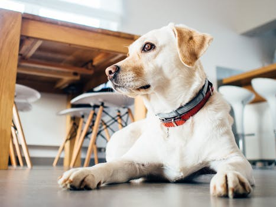

Other
Furry and non-furry animals
Appleberry, newborn.
We are a Seattle-area pet adoption service connecting people like you with pets like these. Fill out an application to start the process of giving one of these pets a forever home.
Dogs are furry animals.
Predicate, age 2. Bulldozer, age 1. Bartamaus, age 1.
Furry and non-furry animals
Appleberry, newborn.